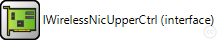
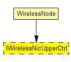
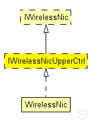

This documentation is released under the Creative Commons license
This documentation is released under the Creative Commons license(no description)
The following diagram shows usage relationships between types. Unresolved types are missing from the diagram. Click here to see the full picture.
The following diagram shows inheritance relationships for this type. Unresolved types are missing from the diagram. Click here to see the full picture.
| Name | Type | Description |
|---|---|---|
| IWirelessNic | module interface | (no description) |
| Name | Type | Description |
|---|---|---|
| WirelessNode | compound module |
Standard host module for a wireless MiXiM host with configurable NIC, and OSI layers, and mobility module. |
| Name | Value | Description |
|---|---|---|
| display | i=block/ifcard |
moduleinterface IWirelessNicUpperCtrl extends inet.linklayer.IWirelessNic { parameters: @display("i=block/ifcard"); gates: //# following gates are not defined in INET input upperControlIn; // control gate for incoming control messages from network layer output upperControlOut; // control gate to send control messages to network layer }
This documentation is released under the Creative Commons license